1 Chapter 1: Review of classical inference
1.1 Module 1 overview:
These notes briefly cover material from your introductory statistics course that will be relevant in STAT 331.
For a more in-depth review, consult the OpenIntro text, or just do an internet search.
1.2 Distributions
The term “distribution” will be used a lot.
A distribution gives the values a variable takes on, and how often it takes them on.
Examples: normal distribution, uniform distribution, distribution of exam scores, distribution of heights…
1.3 Commonly used statistics
1.3.1 Mean
Mean and median identify the center of a data set or distribution.
The mean of a variable \(X\) is denoted \(\bar{X}\).
To calculate the mean of a data set, add up all the values of a variable and divide by how many there are.
\[ \bar{X} = \frac{\sum^n_{i=1}x_i}{n} \]
1.3.2 Median
Median is the “middle” number in a data set. To find the median, put the data values in order from smallest to largest, and identify the number in the middle.
If there are an even number of data points, the median is the average of the middle two numbers:
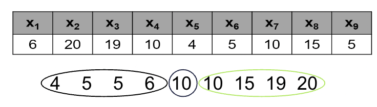
1.3.3 Mean vs. Median
In statistical inference (the process of generalizing from sample to population), we most often draw inference on the population mean.
Sometimes, though, the median is a more sensible statistic than the mean.
This is usually the case when we are studying a “skewed” distribution.
Skewed distributions are distributions that take on values that are extreme (or outlying) values.
Example: income. Most households have incomes between $20,000/yr and $100,000/yr. A handful of households have incomes in the millions or billions of dollars per year.
The mean is affected by outliers. The median is not. This is why we often hear about “median household income” rather than “mean household income”.
1.3.4 jamovi example: mean vs. median
Try creating a skewed data set in jamovi, then analyzing it by selecting for mean and median in the Statistics drop down menu in Descriptives, found under Exploration in the Analysis tab
To create a new dataset, enter data into the blank data table jamovi creates by default:
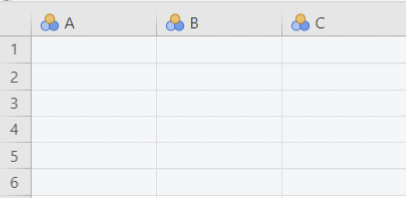
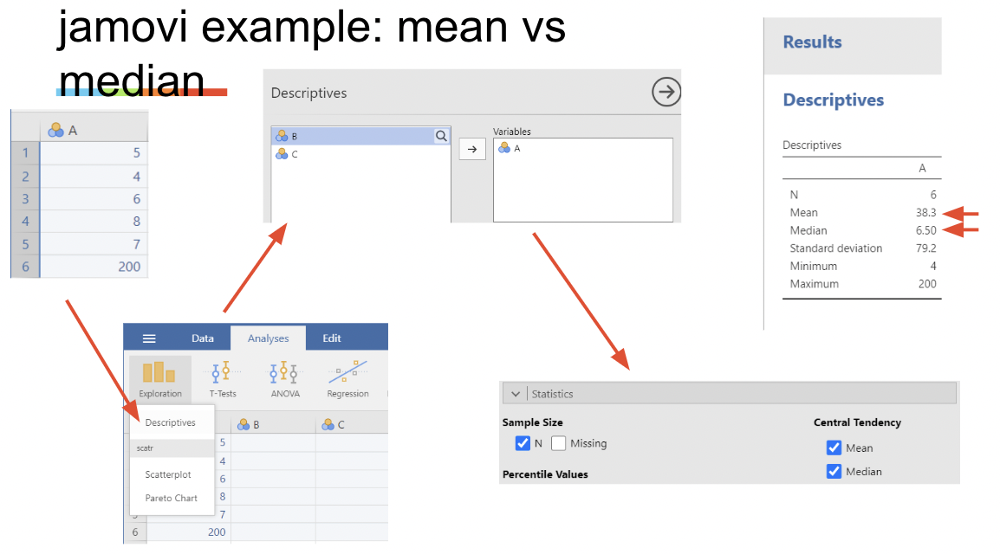
1.3.5 Variance and standard deviation
The center of a distribution is quantified by the mean or the median.
The variability (i.e. spread) of a distribution is quantified by the standard deviation, which is closely related to the variance.
The variance of a distribution or data set is denoted \(s^2\):
\[ s^2 = \frac{\sum^n_{i=1}(x_i - \bar{x})^2}{n-1} \]
The standard deviation is simply the square root of the variance
\[ s = \sqrt{\frac{\sum^n_{i=1}(x_i - \bar{x})^2}{n-1}} \]
Think of this as the “standard” amount by which values deviate from their mean.
We will most often look at standard deviation, because it is the more interpretable of the two statistics. It is in the same units as the original variable.
1.3.6 The correlation coefficient
The correlation coefficient, 𝑟, quantifies the extent to which two variables (call them X and Y) move together:
\[ r = (\frac{1}{n-1})\sum^n_{i=1}\frac{(x_i - \bar{x})(y_i-\bar{y})}{s_xs_y} = (\frac{1}{n-1})\sum^n_{i=1}z_{x_i}z_{y_i} \]
Don’t worry too much about the formula. The most important things to know are:
When two variables move in the opposite direction (i.e. when one gets bigger, the other gets smaller), \(r\) is negative.
When they move in the same direction, \(r\) is positive.
\(r = 0\) means no correlation. \(r =1\) means perfect positive correlation. \(r = -1\) means perfect negative correlation.
1.4 Statistics and parameters
A statistic is any value calculated from data.
A parameter is any value pertaining to a population.
The values of unknown parameters are “estimated” using statistics.
Example: a sample mean can be used to estimate a population mean. i.e. \(\bar{X}\) estimates \(\mu\).
1.5 Sampling distributions
A sampling distribution is the distribution of values a statistic takes on, under repeated sampling.
For example, the Central Limit Theorem states that the sampling distribution of \(\bar{X}\) will be normal, so long as the sample size (\(n\)) is large enough.
Sampling distributions are important because most methods used in statistical inference invoke long run frequency properties.
Example: if the sampling distribution of \(\bar{X}\) is not very spread out, then the value of \(\bar{X}\) should not change much if we take a new sample.
1.5.1 Standard error
Standard error is the standard deviation of a sampling distribution.
In other words, it is the amount of variability in the values a statistic takes on under repeated sampling.
So, if a statistic we calculate has a small standard error, we can infer that the value of that statistic is close to the value of the population parameter it is estimating. If it has a large standard error, its value might be very far away from the value of the parameter.
Example: the standard error of \(\bar{X}\) is \(\frac{s}{\sqrt{n}}\) i.e. \(s_{\bar{X}} = \frac{s}{\sqrt{n}}\)
1.5.2 Sampling dist. and standard error, visually
On Canvas there is a Central Limit Theorem simulator.
When the sample size is large, the distribution of the sample mean is not very spread out. In other words, its standard error is small.
When the sample size is small, the standard error is large.
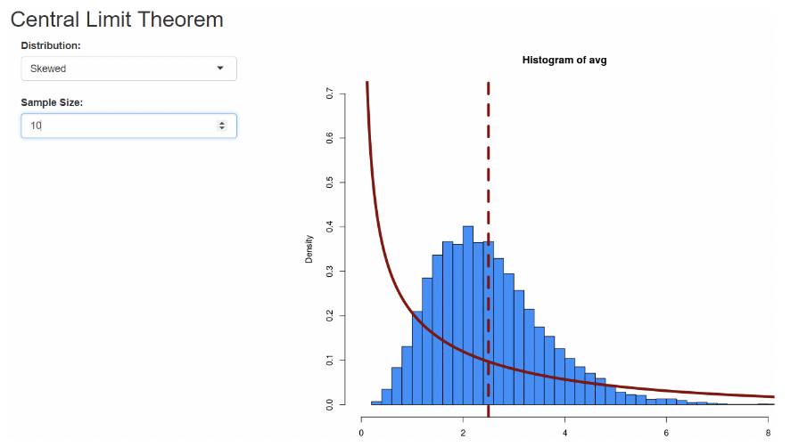
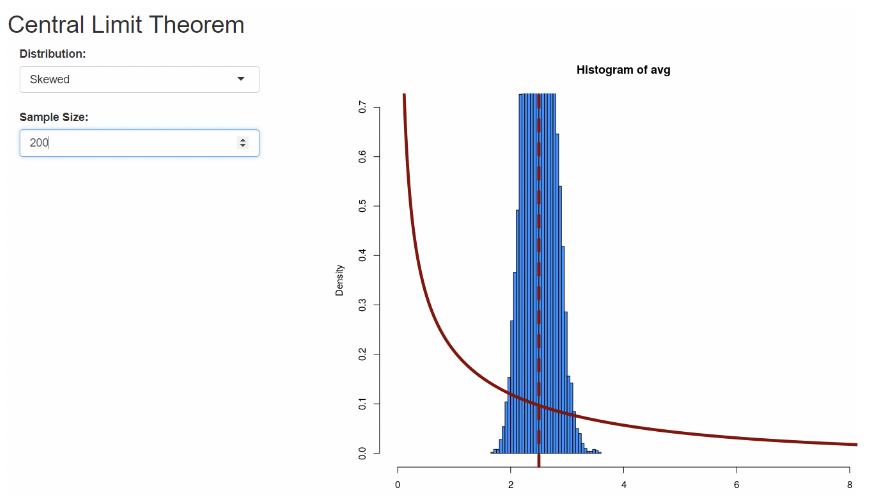
1.6 Confidence intervals
A confidence interval (“CI”) is an interval (i.e. a left endpoint and a right endpoint) constructed around a statistic, when that statistic is being treated as an estimate for the value of an unknown parameter.
Typical confidence intervals are constructed by adding a “margin of error” to, and subtracting it from, an estimate:
𝐶𝐼 𝑓𝑜𝑟 𝑝𝑎𝑟𝑎𝑚𝑒𝑡𝑒𝑟 = 𝑒𝑠𝑡𝑖𝑚𝑎𝑡𝑒 𝑜𝑓 𝑝𝑎𝑟𝑎𝑚𝑒𝑡𝑒𝑟 ± 𝑚𝑎𝑟𝑔𝑖𝑛 𝑜𝑓 𝑒𝑟𝑟𝑜𝑟
Typical margins of error are calculated by multiplying the standard error of the estimate by a “critical value”. A critical value comes from a known distribution and is given by a confidence level.
Example: a 95% CI for a population mean uses a critical value from the \(t\) distribution (we won’t cover why this is).
𝐶𝐼 𝑓𝑜𝑟 𝜇 = \(\bar{x}\) ± \(𝑡_{𝑐𝑟𝑖𝑡𝑖𝑐𝑎𝑙}\) ∗ \(s_{\bar{x}}\)
As long as \(n\) isn’t tiny, the 95% critical value from a \(t\) distribution is approximately 2:
𝐶𝐼 𝑓𝑜𝑟 𝜇 ≈ \(\bar{x}\) ± \(2\) ∗ \(s_{\bar{x}}\)
Confidence intervals should capture the unknown parameter value being estimated. The confidence level gives how often the interval captures the parameter under repeated sampling.
Example: 95% of all 95% CIs for \(\mu\) capture \(\mu\) .
The confidence level can also be thought of as the success rate of the method being used.
So, 95% confidence intervals have a 95% success rate in capturing the value of the unknown parameter.
Just as with sampling distributions, we are invoking repeated sampling here. We say that a 95% CI can be trusted because it is created using a method that would “work” 95% of the time, if we were to keep taking new samples and keep constructing 95% CIs.
1.7 Confidence intervals quantify uncertainty
The most important characteristic of a CI is its width.
We are typically willing to believe that the unknown value of a parameter lies inside the confidence interval constructed from our data.
If the confidence interval is wide, there is a lot of uncertainty as to the true value of the parameter.
If the confidence interval is narrow, then our estimate for the value of the parameter is “precise”, in that it shouldn’t be wrong by much.
CIs are narrow when the sample size is large and / or the standard deviation of our data is small.
CIs are wide with the sample size is small and / or the standard deviation of our data is large.
IMPORTANT: CIs, like all inferential statistical methods, are created under assumptions. We make distributional assumptions about our data (e.g. normality). We assume our statistic is an unbiased estimate of the parameter, i.e. it will not systematically differ from the parameter value under repeated sampling.
1.8 Confidence interval simulation apps
There is a confidence interval simulation app on Canvas, that demonstrates creating confidence intervals “under repeated sampling”. This app is from Brown University’s “Seeing theory” series .
There is also a “sampling distribution and standard error” app on Canvas. It shows a population distribution for a normally distributed variable, a sample of data from that distribution, and the sampling distribution of the mean.
This app also super-imposes the standard error in pink.
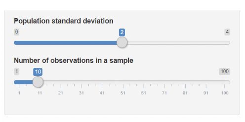
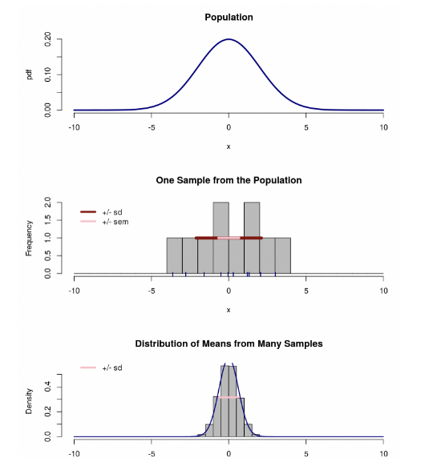
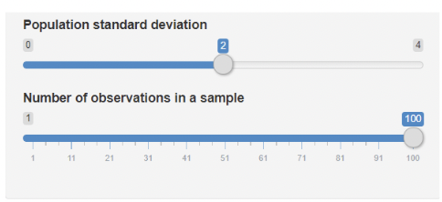
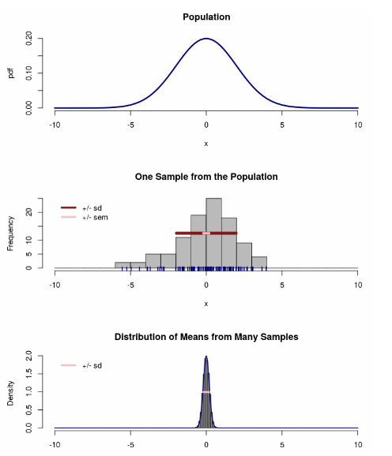
1.9 Confidence intervals in jamovi
Jamovi can create a 95% CI and any other summary statistics selected for using the Statistics menu of Descriptives
For example, when producing summary statistics for a variable using the Statistics drop down menu in Descriptives, you will need to select Confidence Interval for Mean found under Mean Dispersion. Jamovi will report “95% CI mean lower bound” and “95% CI mean upper bound”. These are the endpoints for the 95% CI for \(\bar{X}\).
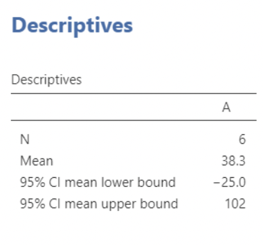
1.10 Hypothesis testing
Hypothesis testing is an inferential method in which a null hypothesis (\(H_0\)) is “tested” against. If the data are in strong enough disagreement with \(H_0\) , then \(H_0\) is rejected.
\(H_0\) typically represents the proposition that “there is nothing of interest at the population level”, or “the proposed research hypothesis is not true”.
If \(H_0\) is rejected, then the result of the test is described as “statistically significant”.
Example: if we have data from a controlled experiment in which \(\mu_1\) represents the population mean for the control group and \(\mu_2\) represents the population mean for the treatment group, then we might test against the null hypothesis:
\[ H_0: \mu_1 = \mu_2,\text{which is equivalent to }H_0: \mu_1 − \mu_2 = 0 \]
If we reject \(H_0\), we say that the sample means, \(\bar{x}_1\) and \(\bar{x}_2\), are “significantly different”. Or, equivalently, that \(\bar{x}_1 - \bar{x}_2\) is “signficantly different” from zero.
1.11 The test statistic
The strength of the evidence against \(H_0\) is quantified by a “test statistic”, from which a “p-value” is calculated.
Test statistics are set up so that, the more the inconsistent the data are with \(H_0\), the larger the test statistic will be.
Example: when testing \(H_0: \mu_1 − \mu_2 = 0\), we use the test statistic:
\[ t = \frac{\bar{x}_1 - \bar{x}_2}{s_{(\bar{x}_1 - \bar{x}_2)}} = \frac{\bar{x}_1 - \bar{x}_2}{\sqrt{\frac{s_1^2}{n_1} + \frac{s_2^2}{n_2}}} \text{(where } s_{(\bar{x}_1 - \bar{x}_2)}\text{ is the standard error of }\bar{x}_1 - \bar{x}_2) \]
1.12 The p-value
The p-value is defined as the probability of getting a test statistic at least as large as the one calculated, if we assume \(H_0\) is true.
Visually, the p-value is the area in the tail of the sampling distribution of the test statistic under \(H_0\)
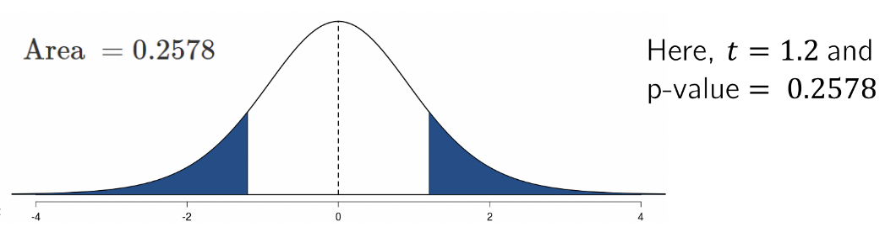
If the p-value is less than the “level of significance” (\(\alpha\)), then \(H_0\) is rejected.
By far the most typical level of significance is \(\alpha = 0.05\)
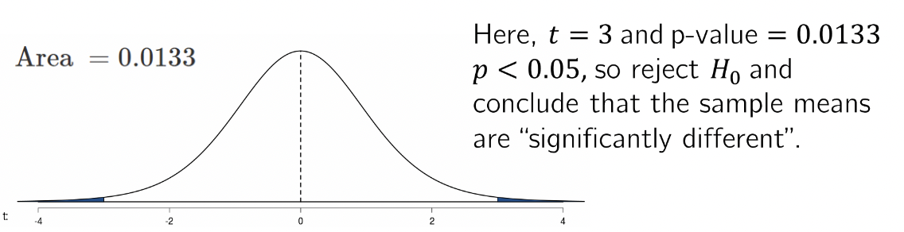
1.12.1 Interpreting “statistical significance”
“Statistically significant” results are those that produce a small p-value.
Small p-values result from data that would be unlikely to be obtained just by chance, if the null hypothesis were true.
So, when you hear that results are “statistically significant”, you can interpret this as meaning “the data we obtained don’t look like the kind of data we’d expect to see just by chance”.
1.12.2 Cautions regarding “statistical significance”
As with confidence intervals, hypothesis tests require assumptions.
These will be covered in detail in the next module.
The most important distinction to be made right now is the distinction between statistical significance and practical importance.
Results can be statistically significant, but still seem weak or unimpressive by practical standards.
Example: this is a statistically significant correlation:
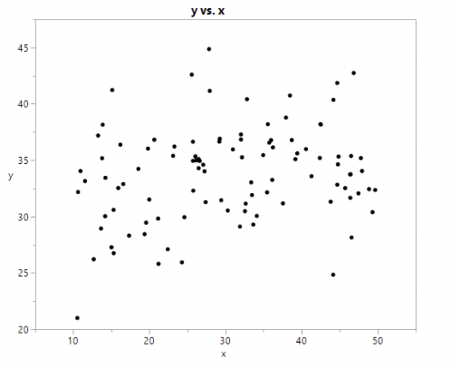
(\(r = 0.22\), p-value = 0.011)
Example: this is a statistically significant difference in means:
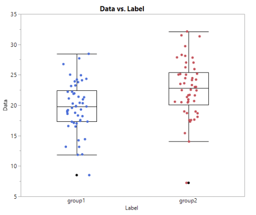
(\(\bar{x}_1 = 19.7\), \(\bar{x}_2 = 22.7\), p-value = 0.0013)
The use of hypothesis testing is controversial.
I personally do not like hypothesis testing, and I think that statistical significance is usually uninteresting.
We’ll explore the debates surrounding statistical significance in module 2.
1.12.3 Confidence intervals vs. p-values
For now, we’ll note that in many cases, confidence intervals can be used in place of p-values to perform a hypothesis test.
If a 95% CI excludes the null value (typically zero), then \(H_0\) is rejected at the \(\alpha = 0.05\) level of significance.
The advantage of using a confidence interval rather than a p-value is that it is easier to make sense out of, and it quantifies uncertainty: the wider the CI, the more uncertainty there is regarding the value of the unknown parameter.
1.12.4 Confidence intervals vs. p-values example
\(\bar{x}_1 = 19.7\), \(\bar{x}_2 = 22.7\), p-value = 0.0013
95% CI for \(\mu_1 - \mu_2: (-4.72,-1.19)\)
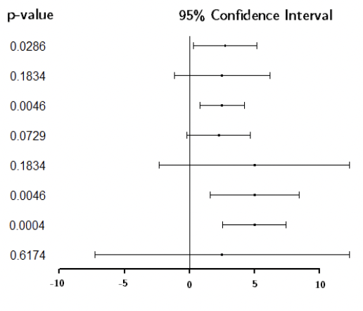
Here we see 95% CIs for differences in means, along with their corresponding p-values.
Note how much the p-values change for small changes in the CIs.
Note also that different CIs can correspond to the same p-value.
1.13 CIs and p-values in jamovi
CIs and p-values can be calculated for a huge variety of statistics.
For now, we will consider testing for a difference in means.
In jamovi, select an Independent Samples T-Test from T-Tests under the Analyses tab
Make Max_Temp_Challenge be the Dependent variable (the one containing measurements), and make Vaccine be the Grouping variable (the one identifying which group the measurement belongs to).
Here is an example using the Vaccine data set. This example uses sheet 3 of the Excel file, titled “H3N2_Clinical_Max”: Data will need to be prepared for test by swapping the rows so that Vaccine occurs first.
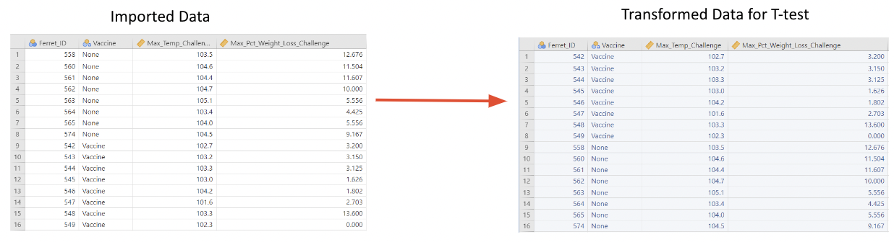
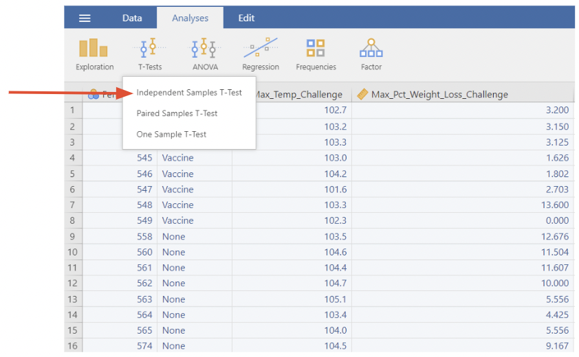
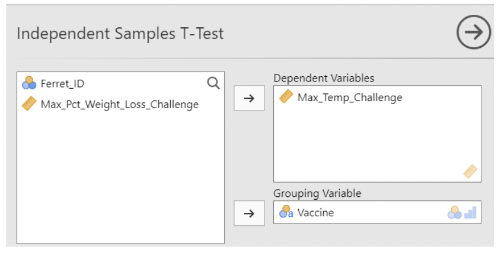
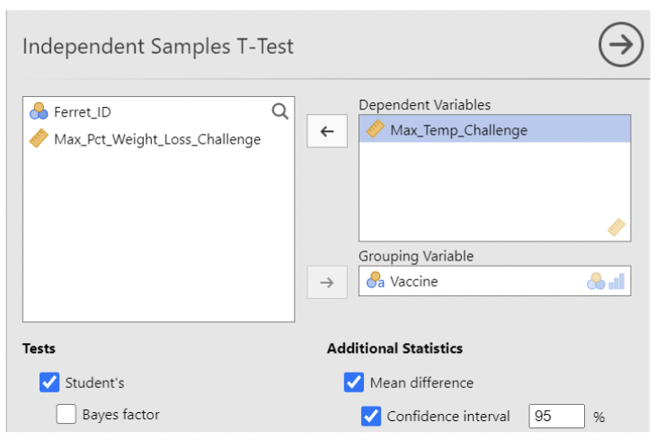
1.14 CIs and p-values in JMP
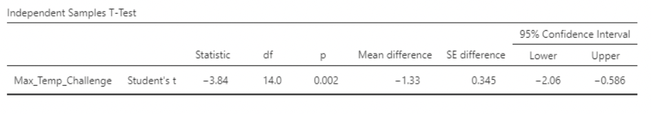
Here, the p-value is \(0.002\)
The 95% CI for the difference in population mean max_temp is \((−2.07, −0.58)\)
The confidence interval excludes zero and \(p < 0.05\), so the difference in sample means is statistically significant.
1.15 Data format in jamovi
A final note on data formatting: this data set is in "long form", meaning each row is a single observation and each column is a variable.
jamovi's Independent Samples T-test requires long form data.
Sometimes you'll have data in "wide form", where each column is a group, and the rows do not correspond to single observations
Example: here's some fake data in wide form:
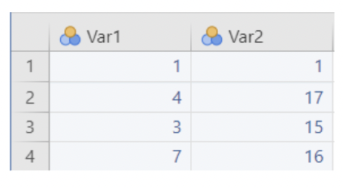
Fit Independent Samples T-test cannot be used to compare these means. jamovi thinks there are 4 observations, each with a measurement on Var1 and Var 2.
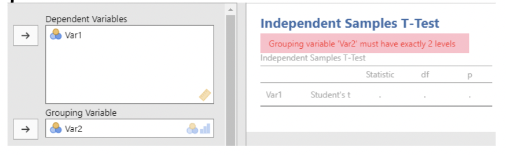
This isn't what we want!
To transform the data into long form, we need to install the Rj – Editor module which will allow us to run R-code in jamovi
1.16 Installing Rj in jamovi
Navigate to the Analyses tab
Click on Modules in the top right of the jamovi window
Click jamovi library
Scroll until you see "Rj – Editor to run R code", click install
You should now see an R logo under the Analyses tab
1.17 Wide form to long form in jamovi
To switch from wide to long form, we will write a simple line of R-code using the Rj – Editor module:
Click on Rj, it will open an empty window where we can enter R - code
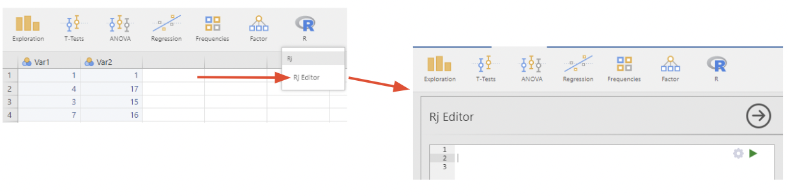
The code below transforms the data into long form by stacking the data within Var1 and Var2 into a new column Data and creates a new column Labels to identify if data is from Var1 or Var2.
The data will output a csv file which we can import from a new session of jamovi
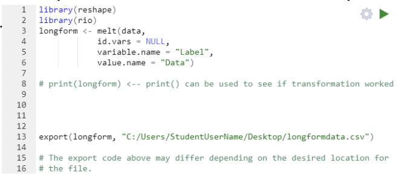
Importing the transformed csv file to a new jamovi window shows our transformed long form data table. Note: column names will need to be updated
Compare the two:
- “Long form”
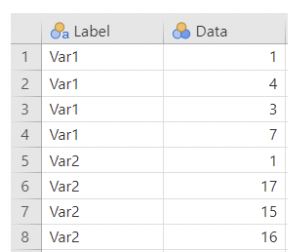
- “Wide form”
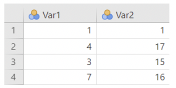
Now Independent Samples T-test can be used to compare means:
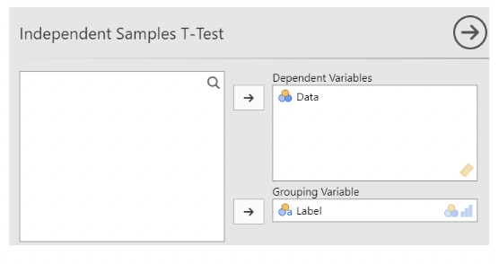
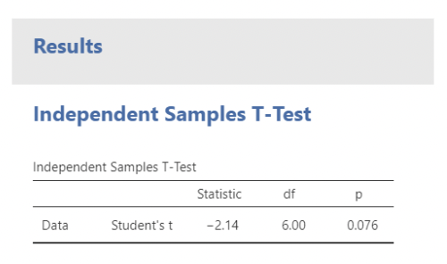